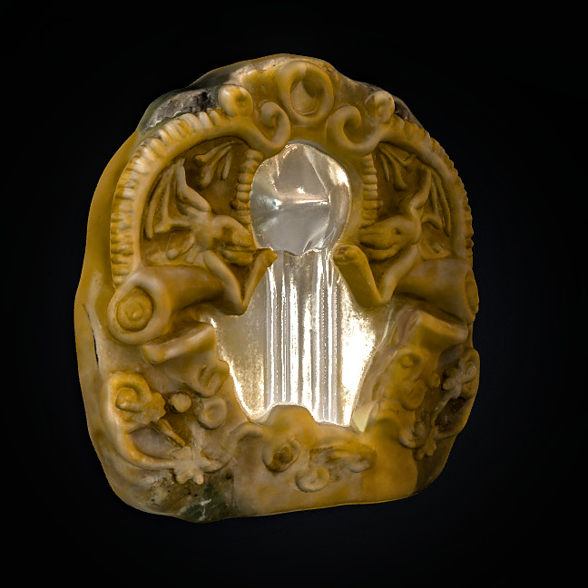

As Brulgwyn speaks his vow—his voice now steady, drawn not from pride but from purpose—the chamber responds.
The spirit before him, once distant and unreadable, begins to glow with a soft, golden light. Its face softens as if the weight of Brulgwyn's words reached into the very stone and sorrow of this ancient place.
““Now... you speak with truth,” it says, its voice like wind through deep caverns. “You carry not just steel—but hope. That is what binds healer and warrior alike.””
The ground beneath Brulgwyn trembles gently as ancient dwarven runes ignite around the edges of the chamber in a soft radiant hue. A sealed alcove in the wall rumbles open, revealing an ancient stone pedestal. Upon it rests a small crystal vial, shimmering with pure silvery light—the Distilled Light of Thramdor, a sacred relic said to cleanse even the most stubborn of corruption,The spirit nods solemnly.
The spirit nods solemnly.
““This is your gift. But know this—returning it to your people is not the end. The curse must still be faced. Take this light, and carry it with resolve. You will be tested again.””
✨You have obtained the Distilled Light of Thramdor:
- Effect: Can be used in a ritual to permanently purify the Root of Withering.
- Can only be used once.
- Glows when evil or corruption is near.
- Examine the vial more closely.
- Prepare to leave the chamber.
- Rest briefly before moving forward
- Head back toward the surface or the Root.
Brulgwyn lifts his worn waterskin—its leather cracked from travel and use—and drinks the last of its cool contents. The water soothes his parched throat and refreshes his spirit just enough for the journey ahead. He tightens the cap, places it back at his side, and takes one final look at the ancient chamber—the relic now pulsing softly within his pack.
With the Distilled Light of Thramdor secured and his resolve strengthened by the spirit's blessing, Brulgwyn turns back toward the darkened corridors of the Hollow.
Torch in hand, shield strapped to his back, he retraces his steps through the winding tunnels. Shadows stir faintly as he passes, but none dare draw near—not while the light clings to him. The Root of Withering, still deep in the Hollow, awaits his return... its corruption temporarily weakened, but still dangerous.
After some time, the stone hall opens again into the familiar chamber where Brulgwyn first attempted the ritual. The twisted black roots pulsate faintly along the walls, and the air is heavy once more—but something’s changed. The presence of the Distilled Light causes the corruption to recoil ever so slightly, drawing back like smoke before a breeze.
Brulgwyn now stands at the site of the Root, the place where his earlier ritual had weakened the curse, but not broken it.
You may now:
- Begin the purification ritual using the Distilled Light.
- Examine the ritual site again for any lingering corruption.
- Rest before attempting the ritual.
- Do something else.
Brulgwyn exhales deeply and sets down his gear beside the chamber wall, the faint light of the relic illuminating the cavern in a soft, golden hue. The corrupted Root slithers slightly in the distance, as if sensing what’s to come—but it doesn’t advance. Not now.
With his shield laid as a barrier and the Distilled Light of Thramdor tucked safely beside him, Brulgwyn settles in for a much-needed rest. The cavern hums with low vibrations—neither hostile nor calm, but patient.
As he dozes, dreams come swiftly.
He sees his village, shrouded in fog. Children coughing, elders growing weak. The once-lively fires of the hearth dimmed. But as he walks through the vision, he sees figures of light gathering at the village square—dwarves once lost, now watching him.
In the dream, the voice of Thramdor echoes through the mist:
“"Courage lies not in the blade, but in the vow fulfilled. Let your spirit carry the light."”
Brulgwyn awakens some hours later. The ache in his muscles has dulled. He feels refreshed, and the warmth of the relic seems to resonate more closely with his heartbeat.
- You have completed a short rest.
- You may now attempt the ritual with advantage (due to both rest and spiritual preparation).
You may now:
- Begin the final purification ritual.
- Inspect the Root one last time before starting.
- Use any items or spells in preparation.
- Do something else.
Brulgwyn stands tall, gripping the Distilled Light of Thramdor in one hand and the Root of Withering in the other. The chamber grows still—eerily so—as if the very Hollow itself is holding its breath.
He places the Root on the ancient stone altar, which pulses faintly beneath it, veins of old dwarven runes glowing with deep orange light.
From within his pack, he removes the amulet of Thramdor, hanging it around his neck, letting it rest over his heart. As he speaks, the amulet begins to glow, reacting to the power of the relic.
“Brulgwyn:
“By the hammer of Thramdor, by oath unbroken,
I call upon the light of my ancestors.
Let this blight be undone.
Let my people be saved.””
The relic responds.
A pillar of golden light rises from the altar, engulfing the Root. The black veins writhe violently, fighting back. Shadows stretch across the room, screaming as they try to claw their way toward Brulgwyn—but the Shield of Protection at his side emits a burst of radiant force, holding them at bay.
This is it—the final moment. The ritual must be completed with three saving throws:
- Religion check (with advantage).
- Arcana check (with advantage).
- Wisdom saving throw (with advantage).
You're ready.
Please roll each of the following:
- d20 Religion (twice, take higher result)
- d20 Arcana (twice, take higher result)
- d20 Wisdom saving throw (twice, take higher result)
Excellent—two out of three rolls complete. Here’s what we’ve got so far:
- Religion: 8 → the ancient rites are faltering, Brulgwyn struggles to fully invoke the divine will.
- Arcana: 13 → he channels the ritual magic steadily, the energies swirling in controlled harmony.
You're at a pivotal moment. The ritual is unstable—success hinges on the final step:
Brulgwyn steels himself. The divine symbols flicker under his hands. His first attempts falter—but then, with a deep breath and the weight of his vow echoing in his chest, he focuses.
🕯 Final Ritual Outcome:
- Religion (12 total): Brulgwyn’s grasp of the rites is shaky, but his heart is true.
- Arcana (18 total): He bends the currents of ancient magic with surprising finesse.
- Wisdom Save (19): He endures the toll. His spirit, unyielding, anchors the ritual in place.
As the final words leave Brulgwyn’s lips, the Root of Withering begins to glow— not with darkness, but a soft golden hue. Black veins retreat. The foul essence writhes... then vanishes in a sudden burst of light.
The air grows sweet, the earth no longer groans beneath his boots. The curse is broken.
A soft voice, the same Brulgwyn heard in visions past, murmurs from the chamber’s stone:
““You have done what no other could, Brulgwyn Burrowbranch. May your village thrive, and your burden be lifted.””
The amulet of Thramdor pulses once, then settles. It is now imbued with purified energy—no longer warding darkness, but restoring life.
With the Root of Withering purified and the curse undone, Brulgwyn Burrowbranch begins his ascent—step by weary step, torchlight flickering against carved stone and ancient dwarven ruins. The amulet of Thramdor pulses warmly at his chest, guiding him through the winding paths of the Hollow, now strangely silent. Peaceful.